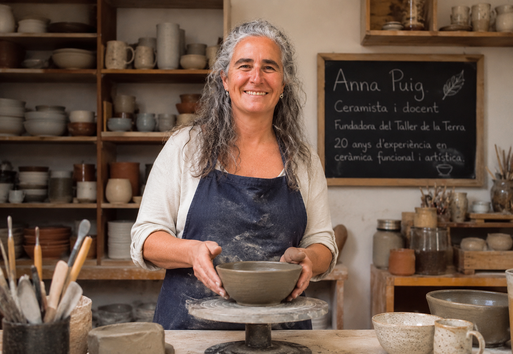
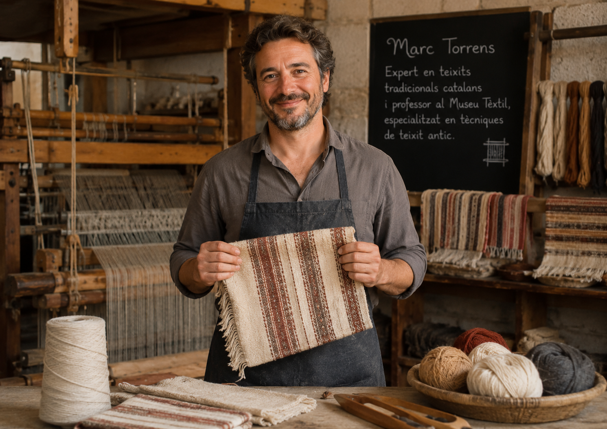
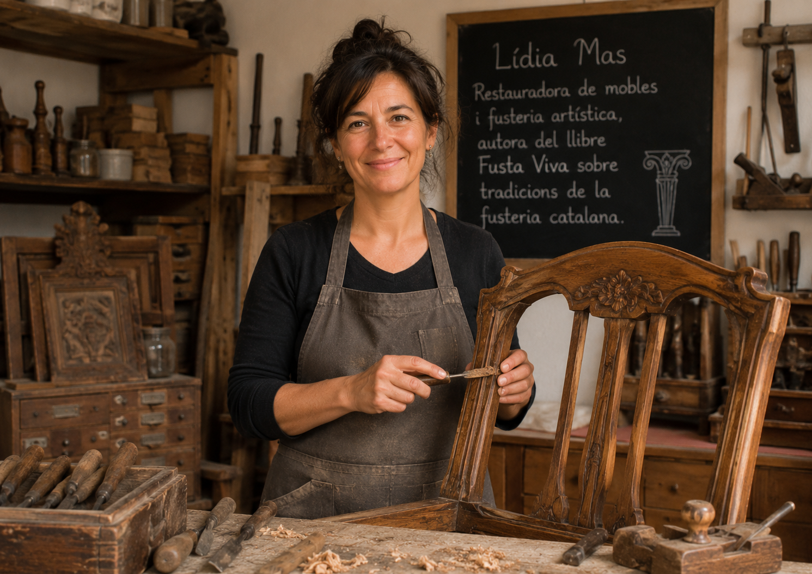
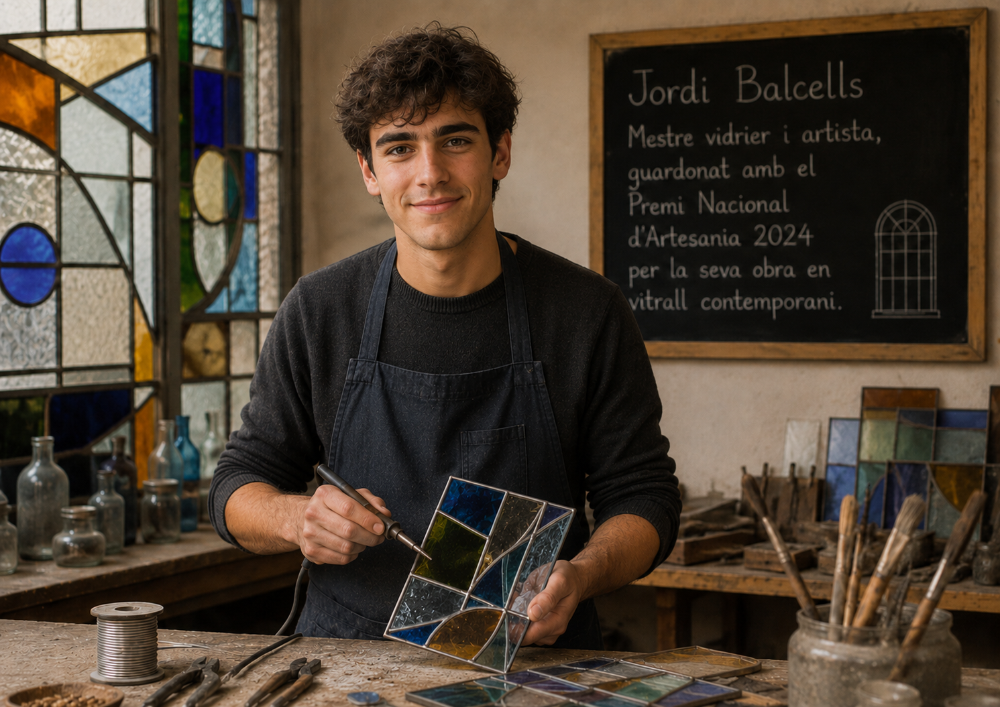
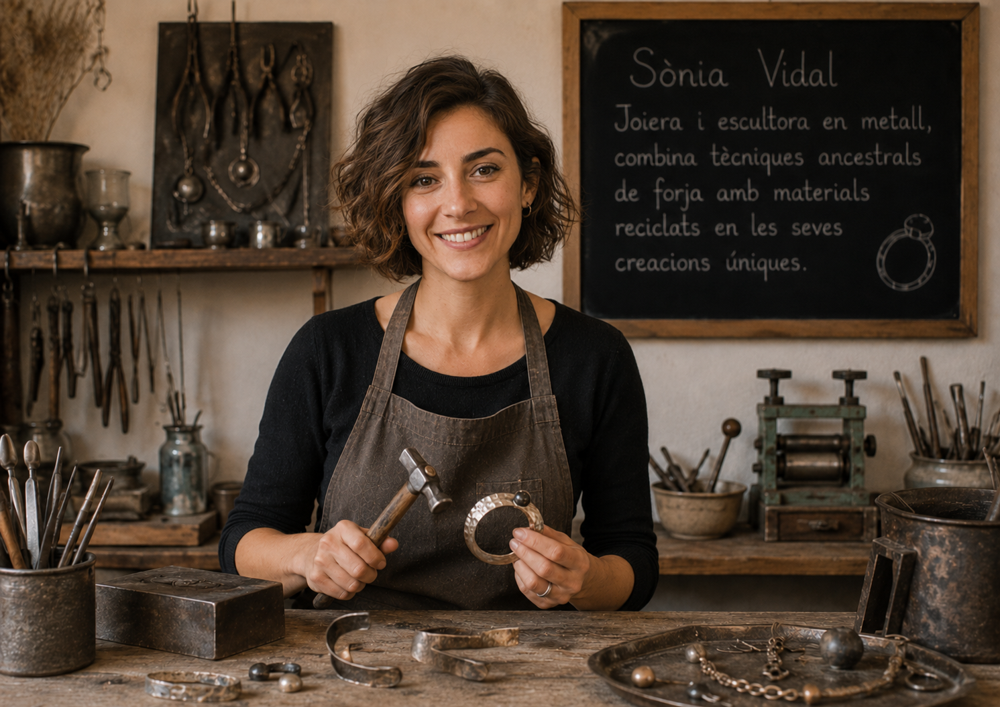
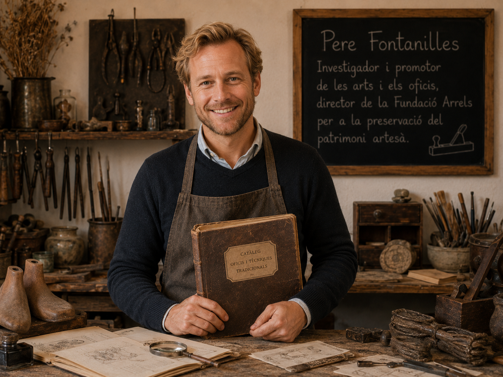

Anna Puig
Ceramista i docent, fundadora del Taller de la Terra, amb 20 anys d'experiència en ceràmica funcional i artística.
Coneix les persones que compartiran el seu saber

Ceramista i docent, fundadora del Taller de la Terra, amb 20 anys d'experiència en ceràmica funcional i artística.

Expert en teixits tradicionals catalans i professor al Museu Tèxtil, especialitzat en tècniques de teixit antic.

Restauradora de mobles i fusteria artística, autora del llibre Fusta Viva sobre tradicions de la fusteria catalana.

Mestre vidrier i artista, guardonat amb el Premi Nacional d'Artesania 2024 per la seva obra en vitrall contemporani.

Joiera i escultora en metall, combina tècniques ancestrals de forja amb materials reciclats en les seves creacions úniques.

Investigador i promotor de les arts i els oficis, director de la Fundació Arrels per a la preservació del patrimoni artesà.